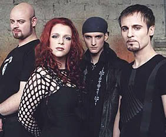

Entrevista
de Lisa Schaphaus e Nils à Ravenheart Music - Fevereiro de 2008
Fale um pouco
sobre a história do Xandria.
Lisa: A banda foi fundada no ano 2000
por Marco que estava inspirado com os trabalhos de Paradise
Lost e Tiamat. Nós assinamos com uma gravadora
apenas dois anos mais tarde, em 12 de dezembro de 2002. No ano
seguinte nós lançamos nosso primeiro álbum
Kill the Sun. Ravenheart veio em 2004. Foram
produzidos dois videoclipes para este álbum: Ravenheart
e Eversleeping. O ano de 2005 foi o mais difícil:
gravamos o terceiro álbum em dois anos. Mas sobrevivemos
e agora estamos orgulhosos em apresentar aos nossos fãs
Salome - The Seventh Veil. Estes são os fatos
mais importantes mas eu poderia escrever três livros inteiros
sobre tudo que aconteceu neste período.
Salome,
seu mais recente trabalho, eu considero excelente. Você
poderia falar um pouco mais sobre as músicas?
Lisa: As músicas deste álbum
foram escritas por três pessoas: Marco, Nils e eu. Assim,
eu lhe contarei sobre algumas músicas que eu estou envolvida.
Save my life foi escrita por mim, pelo Marco e um amigo
nosso que teve mal pressentimento naquele momento. Escrever
Vampire foi um pouco difícil porque Marco desejava
que fosse sobre um vampiro feminino. Mas realmente eu amo isso.
Mas nunca mais vou escrever sobre vampiros novamente (risos).
Beware é a mais antiga
deste álbum. Foi escrita por mim para o álbum
de estréia, mas ninguém se interessou muito. De
alguma maneira esta música se perdeu no computador de
Marco e "reapareceu" em outubro. Nos divertimos muito
e eu estou feliz porque Beware faz parte de um álbum
do Xandria. Salome trata da alma de um músico
compositor. É muito autêntica e emotiva e já
é uma das minhas canções favoritas.
A vocalista Mika Tauriainen, do Entwine,
colaborou para a canção For the Stars in your
eyes. Para mim foi uma honra trabalhar com ela. Firestorm
é ótima embora eu tenha tido que escrever três
letras até que Marco ficasse satisfeito. Mas ele tinha
razão. É um metal mais pesado e eu espero um dia
fazer mais como em Firestorm.
Uma das minhas trilhas sonoras favoritas
é em The Piano. Eu estava muito inspirada por
esta música quando escrevi The Wind and the Ocean.
As pessoas me falam que esta música faz os bebês
se tranqüilizarem (risos).
Sisters of Light lembra Saturday
Night Fever. É muito divertido tocar
esta música – mas eu sempre evito cantá-la
como o Bee Gees faria...
Nils: Emotional Man é
sobre o que as pessoas poderiam ver em outras pessoas –
neste caso a Lisa - e sobre como admirar outra pessoa que você
não conhece. Tem muito a ver com o negócio da
música. E assim o tema secundário se ajusta perfeitamente.
A New Age é nossa música
da abertura em shows. É sobre as pessoas que prometem
o céu e a terra em troca do próprio benefício.
Sleeping Dogs Lie na verdade foi a primeira canção
que eu escrevi para o Xandria, mas não se adaptou a Índia
para o qual havia sido escrito originalmente. Assim acabou entrando
em nosso mais recente álbum. Certamente é uma
música muito tradicional que poderia ser confundida com
Bon Jovi se tivesse um vocal masculino – embora
Bon Jovi seja hoje em dia uma banda de Rock.
On may way é por um lado
muito sensual. De certo modo pode ser a contraparte de Black
and Silver do álbum Índia.
Há
algum significado especial nas músicas e você tem
alguma preferida?
Lisa: Eu deveria ter lido todas as perguntas
antes de lhe responder. Veja acima...
Nils: É o mesmo comigo (risos). Música preferida?
Basicamente eu amo o álbum todo. Mas eu destaco Salome,
Emotional Man, A New Age e Beware.
Você
pode falar mais sobre Sisters of Light (Club Remix)?
Lisa: Eu só sei que há um
Club Remix que foi feito pelo Jesus on Extasy (são
pessoas muito legais). Mas como eu não gosto de remixes
(de qualquer música ou banda) eu não me interesso
muito por estas coisas (nosso promotor vai ficar muito bravo
com esta promoção negativa (risos)).
Nils: Eu não me preocupo. Eu não escrevi a música,
eu não ouvi aquele remix e se não fosse o fato
de sair sob o nome do Xandria, eu não me importaria...
Há poucas novidades para a produção deste
tipo de música. Assim o Dance estúpido reconhecerá
a banda; entretanto não me aborreça se é
a única música do Xandria que gostam...
Seu álbum
anterior é uma referência gótica. Qual a
diferença entre Índia e Salome?
Lisa: Índia é puro
metal. Salome é algo que resgata a raiz do Xandria.
É muito mais pesado e menos polido que Índia.
A gravação
deste álbum foi tranqüila ou trouxe problemas?
Lisa: No início estávamos
muito entusiasmados para a gravação de Salome,
pois era o primeiro álbum produzido por nós mesmos.
As seções de gravação estavam bem
tranqüilas e nós pudemos fazer tudo a tempo.
Nils: Escrever foi bem tranqüilo
e também tivemos tempo de preparar algumas demos. Estávamos
muito bem preparados quando entramos em estúdio. E trabalhando
com nosso engenheiro Jorg Umbreit foi tudo "relax"
no sentido positivo da palavra.
Como o álbum
foi recebido na Europa? Eu estou desapontado por não
ter conseguido o mesmo no Reino Unido.
Lisa:
As reações foram basicamente positivas, embora
não tenhamos um estilo "fada-gótica".
Nós somos nós. E, bem, nós gostaríamos
de trabalhar no Reino Unido e outros tantos países, mas
o mundo é grande e o dinheiro é pouco e é
difícil conquistar uma cena musical estrangeira não
sendo um artista Hip-Hop/Pop. Nós estamos fazendo nosso
melhor...
Nils: Nós estamos felizes porque
a banda existe e podemos gravar nossos álbuns e tocar
para nossos fãs. E, com um pouco de sorte, podemos até
tocar para mais pessoas num futuro. A boa notícia é
que o álbum será lançado na Rússia...
Eu amo esse
estilo de música. O que vocês acham neste estilo
único?
Lisa: É difícil explicar.
Se alguém lhe falasse: "Eu amo o idioma inglês"
Como é que posso dizer? "O que você gosta
nisso?" Você procuraria palavras que provavelmente
goste: É meu idioma nativo, eu realmente não sei
dizer. Nós crescemos nisto.
Você
participou de algum outro projeto?
Lisa: Eu trabalhei com algumas bandas
como Secret Discovery, Celtic Frost, Chamber,
e The Dogma. Mas foram apenas participações
em algumas canções.
Nils: Antes do Xandria eu lancei dois
EP’s com uma banda chamada Visible Touch. Talvez
aquela banda também tenha mudado minha vida. Eu amava
isso e foi exatamente quando nós nos separamos. Paralelamente
eu também gravei um álbum completo com uma banda
de progressive metal, chamada Mind Masque. Após
o Xandria não trabalhei em nenhum outro projeto.
Apesar do
Within
Temptation ter feito muito sucesso aqui (graças
a Roadrunner que assinou com a banda) a cena do Rock/Metal
com vocais femininos pode e deve ser melhor aqui no Reino Unido.
Quais são as expectativas para a cena na Europa e principalmente
no Reino Unido?
Lisa: O gótico na Alemanha ficou
saturado e depois desmoronou. Isso poderia ser negativo mas
eu não penso assim. Isso significa que os seguidores
do Xandria se distanciaram e restaram apenas os verdadeiros
fãs. Para o Reino Unido eu espero que não haja
essa saturação.
Você
tem expectativa de viajar para cá novamente, talve um
lugar diferente de Londres?
Lisa: Resposta curta mas honesta: Sim!
Nils: Como você me conhece a resposta só pode ser
sim!
Musicalmente
e espiritualmente, quais são suas inspirações?
Lisa: Minha mãe, pois sem ela eu
não existiria.
Nils: Musicalmente eu fui muito influenciado
pelas linhas melódicas dos The Beatles (ainda
um dos meus favoritos) e Abba (não tanto, mais...)
em minha infância. E então por Kiss. E
ainda continua... Há uma outra banda que eu gosto muito,
que é o Iron Maiden. Além disso, eu preciso
mencionar que amo os solos de Bruce Dickinson? De qualquer
modo eu não penso que estas influências estejam
muito presentes atualmente. É mais como uma casa ou um
amigo próximo que você se encontra após
um tempo distante. Mas claro que há muitos músicos
brilhantes. Eu suponho que o subconsciente é mais influenciado
do que nós imaginamos.
O que você
aprendeu sobre a comercialização da música?
Lisa: Eu aprendi que os jornalistas nem
se preocupam com você. Então é melhor permanecer
fiel aos seus ideais e ter a certeza de que você pode
acreditar em tudo que faz.
Nils: Quando eu era mais jovem eu via
muitas das minhas bandas favoritas se lamentando como esse negócio
podia ser sujo. Eu entendia, mas como não fazia parte,
não entendia totalmente. Eu sempre pensei (e de vez em
quando ainda penso) que faziam o trabalho errado. Mas, ficando
mais velho (não necessariamente astuto antes disso) eu
percebi que eles não estavam o tempo todo errados...
Da mesma maneira que a Lisa disse, você sempre terá
de perguntar "E nós?" ou "É algo
que nós realmente queremos fazer?" Acreditem, é
mais difícil do que parece...
Eu tenho que
perguntar isto. Marido e esposa em uma banda não traz
problemas?
Lisa: Sim... Novamente e novamente nós
temos que responder essa pergunta (risos). Não, sinceramente,
estando casados é algo positivo para nós, como
sempre temos uma parte da casa e da família conosco.
Nunca discutimos em uma turnê. Não necessariamente
temos a mesma opinião, mas respeitamos. E sempre há
uma pessoa em que posso confiar! Perfeito!
Há
algo que você gostaria de dizer aos fãs da Europa
e particularmente do Reino Unido?
Lisa: Para a
Europa: há ainda muitas regiões distantes e nós
esperamos tocar para vocês em breve. Para o Reino Unido:
Eu já falei isso há algum tempo atrás:
Obrigado pela Fawlty Towers e Iron Maiden.
Espero que você perceba meus olhos brilhando – eu
realmente adoro o que disse, mas claro que nunca reduziria a
uma série de comédia ou uma banda de rock (mesmo
ambas sendo únicas). Ambas apresentações
que fizemos em Londres foram fantásticas e gostaria de
tocar novamente no Reino Unido novamente. Para todos vocês,
onde quer que vocês estejam, comprem Salome e atormentem
seu vendedores enquanto nosso CD não chegar em sua região.
Felicidades!
Extraída
de www.ravenheartmusic.euro-site.co.uk
Traduzida
e adaptada por Spectrum